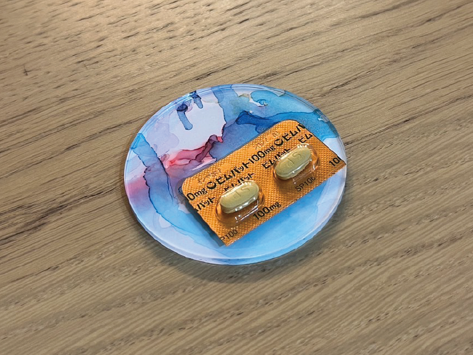

てんかん発作

駆け込んだ病院で入院中、どうやら夜にベッドの上で暴れたらしく、今もてんかんのお薬が処方されています。
当時の記憶はなく、気がついたら看護師さん2人が私の両手を押さえつけていて、また気を失い再度気がつくと腕とベットの手すりがタオルのようなもの？で固定されていました。寝返りを打つため助けを呼んだことまで覚えていて、そのまま寝てしまったようです。朝に説明を聞き、驚きました。
以降、術後もてんかんはありませんが「あれだけ大きなものを取ったのだから、3年くらいはてんかんを警戒しないと」と主治医から説明があり、薬は必須で運転禁止(自転車もNG)。不便でのんびりした毎日です。